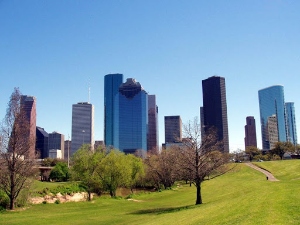
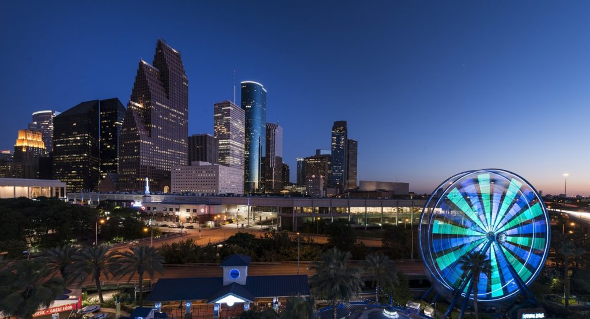
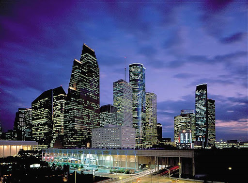
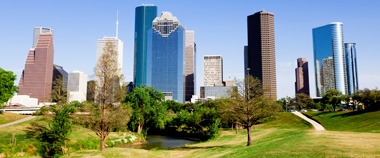
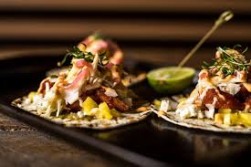
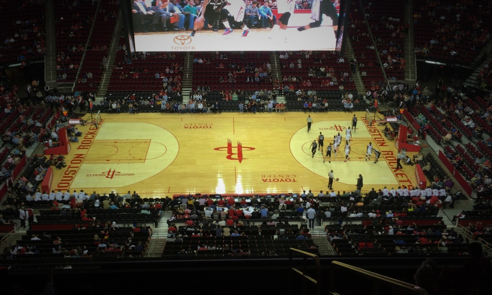
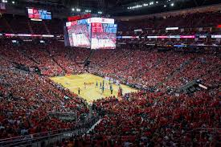

Les Grand endroits de Houston
Houston est une ville immense offrant un style sudiste tranquille . Que ce soit pour déguster un barbecue savoureux, pour visiter ses boutiques haut de gamme, ou danser avec vos bottes flambant neuves au rythme de la musique blues, Houston propose une bonne dose d'arts, d'activités et de sensations de l'ère spatiale à couper le souffle. Des commentateurs de voyage à l'échelle nationale pour Hotwire.com et Budget Travel ont tous deux choisis Houston comme l'une des destinations de 2011 offrant le meilleur rapport en termes de qualité prix et de sensations fortes. Pour faciliter l'organisation de votre voyage, voici une liste de quelques-unes des meilleures activités à effectuer à Houston.
   Cultivant un certain style de vie, les habitants de la quatrième plus grande ville des États-Unis et du
troisième plus grand comté (Harris) le savent bien : Houston est un lieu résolument unique. Avec plus de 2,2
millions d’habitants, la ville attire visiteurs et nouveaux arrivants en proposant un savant mélange
d’expositions artistiques de qualité, d’entreprises florissantes, de clubs de sport professionnels et de
cuisines primées. Le monde entier est d’ailleurs en train de découvrir ce que les locaux ont toujours su :
Houston a figuré au palmarès de plusieurs classements, notamment celui des villes américaines préférées du
site Travel + Leisure, ainsi que celui des destinations américaines les plus abordables du site Hotwire.com.
À Houston, les habitants passent la plus grande partie de leurs journées à l’extérieur grâce à la douceur
des températures tout au long de l’année. Prenez le temps de découvrir l’offre culturelle de la ville ainsi
que ses quartiers, ses galeries et ses sites éclectiques, qui proposent différentes activités dans des
atmosphères très singulières.
Prenons l’exemple de la gastronomie. Un grand nombre de chefs audacieux se sont installés à Houston, dont
les restaurants sont bien plus fréquentés que dans toute autre ville du pays. Les lauréats du prix James
Beard et des chefs à la renommée internationale y servent une cuisine innovante, qui attire fréquemment
l’attention des gastronomes dans les magazines Bon Appetit, Food & Wine et Saveur.
Cette cuisine gastronomique n’est qu’une facette de la philosophie épicurienne de Houston. Les grandes
figures du secteur culinaire de la ville comptent d’ailleurs bien le prouver en proposant les Houston
Culinary Tours. Chaque visite animée par un chef et organisée dans une ambiance intimiste pour des groupes
de 16 personnes dévoile progressivement la face cachée de la scène gastronomique de la ville, des taco
trucks aux marchés de produits du monde.
AUX GOURMANDS: CUISINE ET RESTAURANTS À HOUSTON 🤤

La grande ville moderne a une vaste sélection de lieux de restauration différents. Il est prudent de dire que vous pouvez choisir un endroit pour tous les goûts et tous les budgets parmi les restaurants, les cafés et les bars locaux, car il y a environ trois milles. Les restaurants locaux sont très différents; Ceux-ci sont exotiques, budgétaires et haut de gamme, capables de satisfaire les gourmets les plus exigeants. Les amateurs de nourriture thaïlandaise sont certainement recommandés de faire un dîner au Thai Thai Spice Asian Bistro; Il a commencé à servir les visiteurs tout récemment, il y a environ trois ans. Le restaurant sert d’excellents plats thaïlandais cuits selon des recettes classiques. Les visiteurs seraient agréablement surpris par la qualité des friandises et la rapidité du service.
DU SPORT A HOUSTON
 Le Toyota Center est une salle omnisports située au 1510 Polk Street dans le centre-ville de Houston, au Texas. Nommé d'après le nom du fabricant automobile japonais Toyota, il est depuis son ouverture le parquet des Rockets de Houston de la National Basketball Association et la patinoire des Aeros de Houston de la Ligue américaine de hockey. Les Comets de Houston de la Women's National Basketball Association ont quitté la salle en 2007 pour jouer leur matchs à domicile dans la plus petite mais confortable Reliant Arena. Le Toyota Center a une capacité de 18 332 places pour le basket-ball, 17 800 pour le hockey sur glace et plus de 19 300 pour les concerts, puis il dispose de 103 suites de luxe et 2 900 sièges de club.